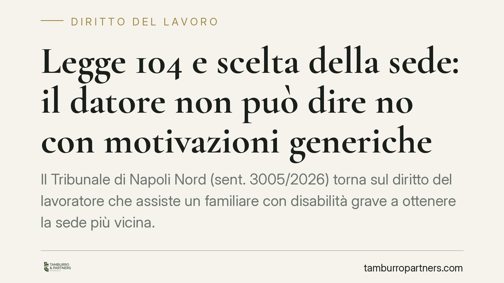

Legge 104 e scelta della sede: il datore non può dire no con motivazioni generiche
Il Tribunale di Napoli Nord (sent. 3005/2026) torna sul diritto del lavoratore che assiste un familiare con disabilità grave a ottenere la sede più vicina. Il datore può negare il trasferimento solo con prove concrete e documentate: l'onere di dimostrare l'impossibilità organizzativa ricade interamente su di lui, non sul dipendente che chiede tutela.

Il fatto
Un lavoratore che assiste un familiare con disabilità grave aveva richiesto l'assegnazione alla sede di lavoro più vicina al domicilio dell'assistito. Il datore aveva opposto un diniego fondato su generiche esigenze organizzative, senza supportarle con documentazione specifica.
Il Tribunale di Napoli Nord, sezione lavoro, con la sentenza n. 3005/2026 ha respinto questa impostazione, ribadendo un principio ormai consolidato ma spesso disatteso nella prassi aziendale.
Inquadramento normativo
La norma di riferimento è l'art. 33, comma 5, della Legge 104/1992. Essa riconosce al lavoratore che assiste con continuità un familiare con disabilità in situazione di gravità il diritto a scegliere, ove possibile, la sede di lavoro più vicina al domicilio della persona assistita, e il diritto a non essere trasferito senza il proprio consenso.
La giurisprudenza qualifica questa posizione come diritto soggettivo, non come semplice interesse legittimo subordinato alla discrezionalità del datore. Ciò significa che il dipendente non deve "meritare" l'assegnazione: ne è titolare in presenza dei presupposti di legge.
L'inciso "ove possibile" non introduce una valutazione libera. Indica un limite oggettivo e reale, che il datore deve dimostrare quando intende negare la richiesta. Il Tribunale di Napoli Nord ribadisce che l'onere della prova grava sul datore di lavoro: è lui a dover documentare l'esistenza di esigenze tecniche, organizzative o produttive effettive e insuperabili, non il lavoratore a dover provare l'assenza di ostacoli.
Perché la pronuncia conta
Il punto centrale è la qualità della motivazione del diniego. Non basta richiamare generiche "esigenze di servizio" o "carenze di organico". Occorrono prove documentali concrete: dati sugli organici, piani di copertura dei posti, vincoli organizzativi verificabili.
Un rifiuto apodittico — affermato senza riscontro — è illegittimo. La sentenza chiude quindi la porta ai "rifiuti facili", quelli formulati per prassi o per resistenza al cambiamento, senza un fondamento provato.
La decisione riguarda sia i datori privati sia quelli pubblici: il diritto ex art. 33 opera trasversalmente, pur con le specificità procedurali del pubblico impiego.
Implicazioni pratiche
Per il lavoratore caregiver, la pronuncia rafforza una posizione di tutela: la richiesta di sede vicina non è una concessione, ma l'esercizio di un diritto. Di fronte a un diniego non motivato in modo rigoroso, esistono margini concreti per contestarlo in sede giudiziale o cautelare.
Per il datore di lavoro, cambia il metodo decisionale. Prima di rigettare una richiesta, occorre costruire un fascicolo motivazionale solido. Un diniego debole espone non solo all'ordine giudiziale di assegnazione della sede, ma anche a potenziali profili risarcitori per il pregiudizio arrecato al diritto all'assistenza.
Resta fermo che il diritto presuppone requisiti precisi: situazione di gravità certificata ai sensi dell'art. 3, comma 3, L. 104/1992, assistenza continuativa e sussistenza della sede alternativa. Il diritto non è illimitato, ma una volta integrati i presupposti, il margine datoriale di rifiuto è stretto.
Cosa fare in concreto
Per il lavoratore:
- Formalizza la richiesta per iscritto, allegando la certificazione di gravità e la documentazione sull'assistenza prestata.
- Conserva ogni comunicazione con il datore: la tracciabilità è decisiva se il rifiuto va impugnato.
- Se il diniego è generico o privo di documentazione, valuta con un legale l'azione giudiziale, anche in via d'urgenza.
Per il datore di lavoro:
- Non respingere la richiesta con formule standard: predisponi una motivazione basata su dati organizzativi verificabili.
- Verifica preventivamente la disponibilità effettiva della sede richiesta prima di opporre un diniego.
Conclusione
La sentenza non introduce principi nuovi, ma li applica con rigore. Il messaggio è netto: il diritto alla sede vicina ex art. 33 L. 104/1992 è reale e azionabile, e il rifiuto datoriale regge solo se poggia su prove concrete. Consigliamo, in entrambe le posizioni, di affrontare la questione con la documentazione completa fin dal primo passaggio.
---
Contributo informativo a cura di Tamburro & Partners - Avv. Giuseppe Tamburro. Non costituisce parere legale.
Ogni storia di lavoro ha i suoi tempi.
Se gestisci HR e vuoi un confronto su contenzioso, ispezioni o licenziamenti, scrivi allo studio. Ti rispondiamo entro un giorno lavorativo.